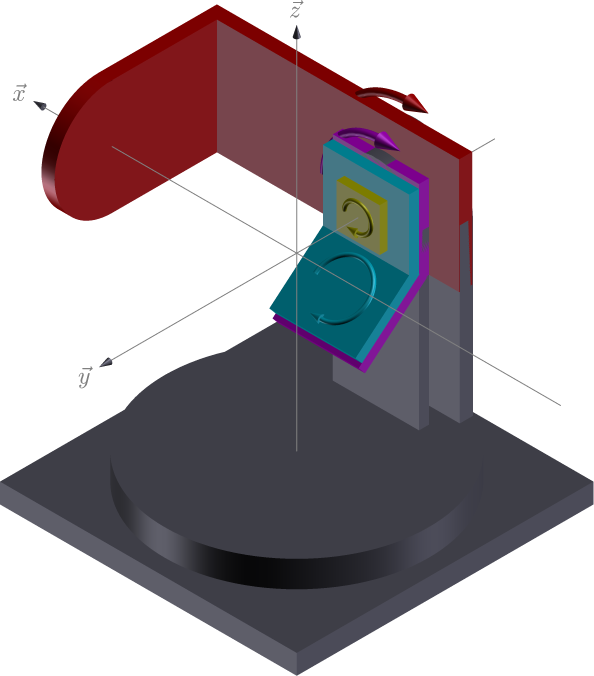

hkl_soleil K4CV#
The kappa (\(\kappa\)) diffractometer geometry replaces the \(\chi\)-ring on an Eulerian 4-circle diffractometer with a kappa stage which holds the phi stage. The kappa stage is tilted at angle \(\alpha\) (typically 50 degrees) from the \(\omega\) stage.

This is the hkl_soleil K4CV geometry:
axis |
moves |
rotation axis |
vector |
|---|---|---|---|
komega |
sample |
\(-\vec{y}\) |
|
kappa |
sample |
\(\vec{x}\) |
|
kphi |
sample |
\(-\vec{y}\) |
|
tth |
detector |
\(-\vec{y}\) |
|
xrays incident on the \(\vec{x}\) direction (1, 0, 0)
See: hkl_soleil documentation for more details.
Define this diffractometer#
Use the hklpy2 creator() function to create a diffractometer
object. The diffractometer object will have simulated rotational axes.
We’ll provide the geometry and solver names.
By convention, the name keyword is the same as the object name.
See the geometry tables for a more complete description of the available diffractometers.
Create the Python diffractometer object (k4cv). We choose this name to avoid any confusion with the diffractometer’s kappa axis.
import hklpy2
k4cv = hklpy2.creator(name="k4cv", geometry="K4CV", solver="hkl_soleil")
Add a sample with a crystal structure#
from hklpy2.user import (
add_sample,
calc_UB,
cahkl,
cahkl_table,
pa,
set_diffractometer,
setor,
wh,
)
set_diffractometer(k4cv)
add_sample("silicon", a=hklpy2.SI_LATTICE_PARAMETER)
Sample(name='silicon', lattice=Lattice(a=5.431, system='cubic'))
Setup the UB orientation matrix using hklpy#
Define the crystal’s orientation on the diffractometer using the 2-reflection method described by Busing & Levy, Acta Cryst 22 (1967) 457.
Diffractometer wavelength#
Set the diffractometer’s X-ray wavelength. This will be used for both reflections. k4cv.wavelength is an
ophyd Signal. Use
its .put() method.
k4cv.beam.wavelength.put(1.54)
Specify the first reflection#
Provide the set of angles that correspond with the reflection’s Miller indices: (hkl)
The setor() (set orienting reflection) method uses the diffractometer’s wavelength at the time it is called. (To add reflections at different wavelengths, add a wavelength=1.0 keyword argument with the correct value.)
r1 = setor(4, 0, 0, tth=-69.0966, komega=55.4507, kappa=0, kphi=-90)
Specify the second reflection#
r2 = setor(0, 4, 0, tth=-69.0966, komega=-1.5950, kappa=134.7658, kphi=123.3554)
Compute the UB orientation matrix#
The calc_UB() method returns the computed UB matrix.
calc_UB(r1, r2)
[[2.0191835e-05, -8.3752177e-05, -1.156906934347],
[0.0, -1.156906934523, 8.3752177e-05],
[-1.156906937379, -1.462e-09, -2.0191835e-05]]
Report our setup#
pa()
diffractometer='k4cv'
HklSolver(name='hkl_soleil', version='5.1.3', geometry='K4CV', engine_name='hkl', mode='bissector')
Sample(name='silicon', lattice=Lattice(a=5.431, system='cubic'))
Reflection(name='r_efc2', h=4, k=0, l=0)
Reflection(name='r_759f', h=0, k=4, l=0)
Orienting reflections: ['r_efc2', 'r_759f']
U=[[0.0, 0.0001, -1.0], [0.0, -1.0, 0.0001], [-1.0, 0.0, 0.0]]
UB=[[0.0, 0.0001, -1.1569], [0.0, -1.1569, 0.0001], [-1.1569, 0.0, 0.0]]
constraint: -180.0 <= komega <= 180.0
constraint: -180.0 <= kappa <= 180.0
constraint: -180.0 <= kphi <= 180.0
constraint: -180.0 <= tth <= 180.0
Mode: bissector
beam={'class': 'WavelengthXray', 'source_type': 'Synchrotron X-ray Source', 'energy': 8.0509, 'wavelength': 1.54, 'energy_units': 'keV', 'wavelength_units': 'angstrom'}
pseudos: h=0, k=0, l=0
reals: komega=0, kappa=0, kphi=0, tth=0
Check the orientation matrix#
Perform checks with forward() ($hkl$ to angle) and
inverse() (angle to $hkl$) computations to verify the diffractometer
will move to the same positions where the reflections were identified.
Constrain one of the motors#
keep
kphiin the negative rangeallow for slight roundoff errors
First, apply constraints to the kphi
rotational motor. Constraints are part of the diffractometer’s core-level
support.
Note: A constraint does not limit the range of the motor, it constrains
the choice of solutions from the forward() computation.
k4cv.core.constraints["kphi"].limits = (-180, 0.001)
k4cv.core.constraints
['-180.0 <= komega <= 180.0', '-180.0 <= kappa <= 180.0', '-180.0 <= kphi <= 0.001', '-180.0 <= tth <= 180.0']
(400) reflection test#
Check the
inverse()(angles -> (hkl)) computation.Check the
forward()((hkl) -> angles) computation.
Check inverse() at (400)#
To calculate the (hkl) corresponding to a given set of motor angles,
call k4cv.inverse().
The hkl values are provided as a Python namedtuple structure.
print(f"{k4cv.real_axis_names=}")
# Specify values, by correct order of names.
k4cv.inverse(55.4507, 0, -90, -69.0966)
k4cv.real_axis_names=['komega', 'kappa', 'kphi', 'tth']
Hklpy2DiffractometerPseudoPos(h=6.1599, k=0, l=0)
Check forward(400)#
Compute the angles necessary to position the diffractometer for the given reflection.
Note:
For the forward() computation, more than one set of angles may be used to reach the same crystal reflection. This test will report the default selection. The default selection (which may be changed through methods described in module :mod:hklpy2.ops) is the first solution.
function |
returns |
|---|---|
|
The default solution |
|
Table of all allowed solutions. |
Before calling forward(), make sure we are using the desired operations
mode. "bissector" maintains $\omega = (2\theta) / 2$
k4cv.core.mode = "bissector"
Here we print the default solution (the one returned by calling cahkl().
cahkl(4, 0, 0)
Hklpy2DiffractometerRealPos(komega=55.4509, kappa=-0.0, kphi=-90.001, tth=-69.0982)
Note: cahkl() is a shortcut to k4cv.forward().
k4cv.forward(4, 0, 0)
Hklpy2DiffractometerRealPos(komega=55.4509, kappa=-0.0, kphi=-90.001, tth=-69.0982)
Show the table of all forward() solutions for $(4\ 0\ 0)$ and $(0\ 4\ 0)$ allowed by the current constraints. Since this function accepts a list of $hkl$ reflections, extra Python syntax is applied.
cahkl_table((4, 0, 0), (0, 4, 0))
======= = ========= ======== ========= ========
(hkl) # komega kappa kphi tth
======= = ========= ======== ========= ========
(4 0 0) 1 55.4509 0 -90.001 -69.0982
(4 0 0) 2 -55.4509 0 -90.001 69.0982
(0 4 0) 1 -1.5879 134.746 -57.0399 -69.0982
(0 4 0) 2 -112.4896 134.746 -57.0376 69.0982
(0 4 0) 3 -67.5104 -134.746 -122.9624 -69.0982
(0 4 0) 4 -178.4121 -134.746 -122.9601 69.0982
======= = ========= ======== ========= ========
(040) reflection test#
Repeat the inverse and forward calculations for the
second orientation reflection.
Check inverse() at (040)#
k4cv.inverse(-1.5950, 134.7568, 123.3554, -69.0966)
Hklpy2DiffractometerPseudoPos(h=-0.0001, k=3.9999, l=-0.0003)
Check forward(040)#
k4cv.forward(0, 4, 0)
Hklpy2DiffractometerRealPos(komega=-1.5879, kappa=134.746, kphi=-57.0399, tth=-69.0982)
Scan in reciprocal space using Bluesky#
To scan with Bluesky, we need more setup.
import bluesky.plans as bp
from bluesky import RunEngine
from bluesky import SupplementalData
from bluesky_tiled_plugins import TiledWriter
from bluesky.callbacks.best_effort import BestEffortCallback
from tiled.client import from_uri
from tiled.server import SimpleTiledServer
server = SimpleTiledServer()
client = from_uri(server.uri)
bec = BestEffortCallback()
bec.disable_plots()
sd = SupplementalData()
tw = TiledWriter(client)
RE = RunEngine({})
RE.md = {}
RE.preprocessors.append(sd)
RE.subscribe(tw)
RE.subscribe(bec)
Tiled version 0.2.2
1
Setup the RE to save the k4cv Configuration with every run.
crw = hklpy2.ConfigurationRunWrapper(k4cv)
RE.preprocessors.append(crw.wrapper)
(h00) scan near (400)#
In this example, we have no detector. Still, we add the diffractometer object in the detector list so that the hkl and motor positions will appear as columns in the table.
k4cv.move(4, 0, 0)
wh()
RE(bp.scan([k4cv], k4cv.h, 3.9, 4.1, 5))
wavelength=1.54
pseudos: h=4.0, k=0, l=0
reals: komega=55.4509, kappa=0, kphi=-90.001, tth=-69.0982
Transient Scan ID: 1 Time: 2025-12-02 11:50:47
Persistent Unique Scan ID: '1652cfa2-7ead-4b34-bd79-c5fbfa669390'
New stream: 'primary'
+-----------+------------+------------+----------------------+------------------+------------+------------+-------------+------------+------------+------------+
| seq_num | time | k4cv_h | k4cv_beam_wavelength | k4cv_beam_energy | k4cv_k | k4cv_l | k4cv_komega | k4cv_kappa | k4cv_kphi | k4cv_tth |
+-----------+------------+------------+----------------------+------------------+------------+------------+-------------+------------+------------+------------+
| 1 | 11:50:47.3 | 3.900 | 1.540 | 8.051 | 0.000 | 0.000 | 56.431 | -0.000 | -90.001 | -67.137 |
| 2 | 11:50:47.3 | 3.950 | 1.540 | 8.051 | -0.000 | -0.000 | 55.943 | -0.000 | -90.001 | -68.115 |
| 3 | 11:50:47.3 | 4.000 | 1.540 | 8.051 | 0.000 | -0.000 | 55.451 | 0.000 | -90.001 | -69.098 |
| 4 | 11:50:47.3 | 4.050 | 1.540 | 8.051 | 0.000 | 0.000 | 54.956 | 0.000 | -90.001 | -70.087 |
| 5 | 11:50:47.3 | 4.100 | 1.540 | 8.051 | 0.000 | 0.000 | 54.459 | 0.000 | -90.001 | -71.083 |
+-----------+------------+------------+----------------------+------------------+------------+------------+-------------+------------+------------+------------+
generator scan ['1652cfa2'] (scan num: 1)
('1652cfa2-7ead-4b34-bd79-c5fbfa669390',)
(hk0) scan near (440)#
Scan between the two orientation reflections. Need to keep $\varphi\ge0$ to avoid big jumps during the scan.
k4cv.core.constraints["kphi"].limits = -0.001, 180
k4cv.move(4, 4, 0)
RE(bp.rel_scan([k4cv], k4cv.h, -0.2, 0.2, k4cv.k, 0.2, -0.2, 10))
Transient Scan ID: 2 Time: 2025-12-02 11:50:47
Persistent Unique Scan ID: '8029aea2-4328-4762-8e16-3d87634bae90'
New stream: 'primary'
+-----------+------------+------------+------------+----------------------+------------------+------------+-------------+------------+------------+------------+
| seq_num | time | k4cv_h | k4cv_k | k4cv_beam_wavelength | k4cv_beam_energy | k4cv_l | k4cv_komega | k4cv_kappa | k4cv_kphi | k4cv_tth |
+-----------+------------+------------+------------+----------------------+------------------+------------+-------------+------------+------------+------------+
| 1 | 11:50:47.6 | 3.800 | 4.200 | 1.540 | 8.051 | 0.000 | -121.557 | -63.947 | 111.866 | -106.839 |
| 2 | 11:50:47.6 | 3.844 | 4.156 | 1.540 | 8.051 | 0.000 | -121.861 | -63.054 | 111.524 | -106.763 |
| 3 | 11:50:47.6 | 3.889 | 4.111 | 1.540 | 8.051 | 0.000 | -122.173 | -62.163 | 111.183 | -106.706 |
| 4 | 11:50:47.6 | 3.933 | 4.067 | 1.540 | 8.051 | 0.000 | -122.492 | -61.273 | 110.845 | -106.668 |
| 5 | 11:50:47.7 | 3.978 | 4.022 | 1.540 | 8.051 | 0.000 | -122.819 | -60.385 | 110.509 | -106.649 |
| 6 | 11:50:47.7 | 4.022 | 3.978 | 1.540 | 8.051 | 0.000 | -123.152 | -59.499 | 110.175 | -106.649 |
| 7 | 11:50:47.7 | 4.067 | 3.933 | 1.540 | 8.051 | 0.000 | -123.493 | -58.614 | 109.844 | -106.668 |
| 8 | 11:50:47.7 | 4.111 | 3.889 | 1.540 | 8.051 | 0.000 | -123.842 | -57.732 | 109.514 | -106.706 |
| 9 | 11:50:47.7 | 4.156 | 3.844 | 1.540 | 8.051 | 0.000 | -124.197 | -56.852 | 109.187 | -106.763 |
| 10 | 11:50:47.7 | 4.200 | 3.800 | 1.540 | 8.051 | 0.000 | -124.559 | -55.975 | 108.863 | -106.839 |
+-----------+------------+------------+------------+----------------------+------------------+------------+-------------+------------+------------+------------+
generator rel_scan ['8029aea2'] (scan num: 2)
('8029aea2-4328-4762-8e16-3d87634bae90',)